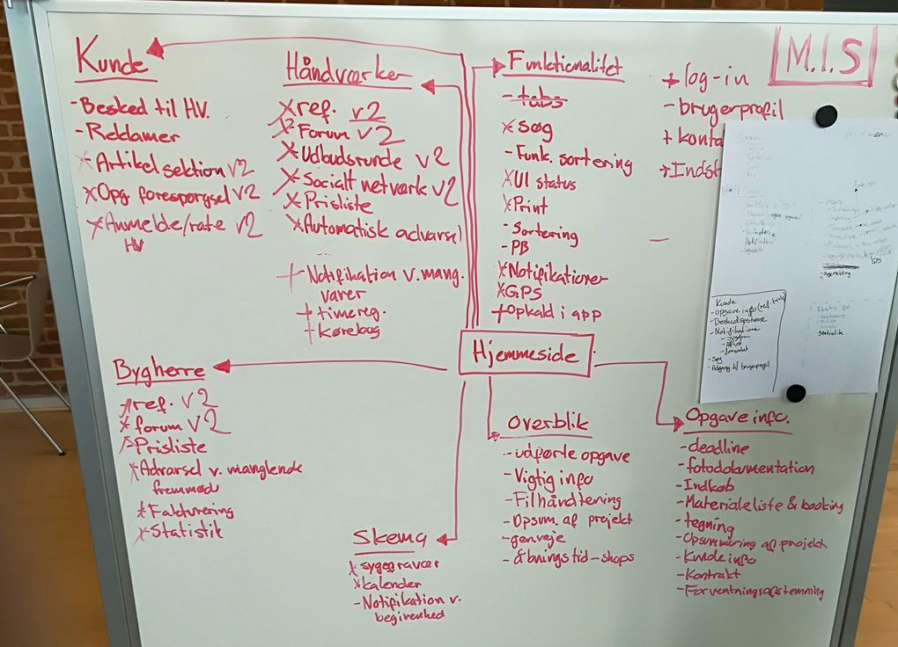

Prototyping projekt
Projektet indeholdte forskellige faser:
Etableringsfasen
I første fase er det bedst at få dannet et godt grundlag for gruppearbejdet. Derfor lavede vi en gruppekontrakt, hvor vi aftalte de spilleregler der skulle være i projektets forløb.
Researchfasen:
Her arbejdede vi med research af håndværkercasen, hvor vi brugte teknikker og metoder fra Field Guide To Human Centered Design. Ideudviklingsfasen: Her idégenerede vi og skulle finde en løsning på problemet med håndværkerens arbejdsopgaver. Vi udarbejdede nogle spørgsmål, som vi skulle stille håndværkere, eller også personer som havde erfaring.
Vi brainstormede over en masse funktioner som håndværkeren og brugeren skulle kunne benytte.
Vi brugte metoden ekspert interview, da eksperter kan komme med dybe og faglige inputs. De har en stor erfaring og har en stor indsigt i branchen.
Vi tog kontakt til en tømrermester der i forvejen brugte projektstyringsprogrammet ”Apacta”, der gav gode svar, på hvilke udfordringer, han og hans medarbejdere møder i deres daglige arbejde. Han fortalte, at de kvalitetssikre arbejdet, og han synes en forventningsafstemning fra kunden var vigtig.
Derudover har vi interviewet en studerende på skolen, som har arbejdet som håndværker. Hans svar på spørgsmålene lå meget op ad tømrermesterens. På hans arbejdsplads brugte de ikke noget projektstyringsprogram i forvejen, og kunne derfor komme med idéer til hvad der ville gavne på i håndværkerprojektet.
Ideudviklingsfasen

Prototyping
I denne fase lavede vi papir-prototyping af vores løsning, altså appen. Her forstillede vi os hvordan Appen skulle se ud og hvilke funktioner, der skulle være tilstede for at gøre den brugervenlig.
Da man ikke kan undgå, at skulle have forskellige fagfolk til, at lave noget på sit byggeprojekt ville vi med appen skabe overblik over hvilke opgaver, der skulle laves, af hvem og hvornår. Hertil designede vi det som en ugekalender, hvor man kunne få overblik over hvornår enten tømreren, mureren, elektrikeren m.m. skulle udføre et stykke arbejde på byggeprojektet. Dermed ville man ikke komme til at stå i vejen for hinanden i byggeprojektets forløb.
Vi brainstormede over en masse appfunktioner, som bruger og som kunde skulle kunne benytte sig af, når man er logget ind som kunde eller som håndværker. En appfunktion kunne være eksempelvis ”log-in” eller ”bestil en håndværker” funktionerne. Det blev udarbejdet ud fra vores indsamlede empiri.
Testfasen:
I denne fase skulle vi få andre til teste vores prototype på papir og give os feedback på prototypen. På den måde kunne vi inddrage brugerne i vores design tilgang. Præsentationsfasen: Her skulle vi ud fra vores undersøgelser og tests filme en kort video der skulle præsentere appen. I projektets slutning viste vi vores film til de andre medstuderende i klassen.
Hvad kunne vi have gjort anderledes?
Hvis der var en ting vi skulle have gjort anderledes er det at vi kunne have inddraget kunderne af byggeprojekterne. Her ville kundeinterviews give et mere nuanceret og præcist billede af den app, vi skulle stå med til sidst. Vores empiri var nemlig kun håndværkernes syn på sagen. Appen skal fungere til både håndværkere og kunder, og derfor ville det være oplagt at spørge begge parter. Ved vores interviews blev to forskellige metoder brugt. Vi kontaktede første interview person (tømrermesteren) telefonisk, og anden interview person (tidligere håndværker) befandt sig på Dania. Hvis vi var taget på ud på byggepladserne havde vi mulighed for at tænke mimik og kropssprog af interviewpersonerne med indover. Telefonisk kan der opstå misforståelser, som man skal tage forbehold til.
Video
Her er videoen til vores prototype projekt.